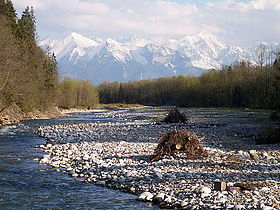

Сейсмоопасность
Внешние Восточные Карпаты являются одним из самых сейсмоопасных регионов Европы. Их сейсмоактивность отмечали ещё римские источники II—III вв, когда происходила римская колонизация Дакии. С конца XVIII века из-за интенсивного роста населения и его урбанизации, ущерб от сейсмоактивности прикарпатской области неуклонно возрастал. Эпицентром сейсмоактивности является т. н. зона Вранча, где сила землетрясений достигает магнитуды 8,3 по шкале Рихтера. Наиболее разрушительными были Карпатское землетрясение (1940) и Бухарестское землетрясение (1977), толчки от которых ощущались по всей Восточно-Европейской равнине.
География
Горная система Карпат начинается недалеко от Братиславы (Словакия) и заканчивается на юго-востоке недалеко от «Железных ворот» в Румынии. Расположены горы на западе Украины на границе с Румынией, Венгрией, Словакией и Польшей. Длина Карпатских гор около 1500 км. Дугой с трёх сторон они охватывают среднеевропейскую низменность[1]. В северо-западной части ширина составляет 240 км, в юго-западной — 340, в северо-восточной (территория Украины) — 100—120 км. Наивысшая точка Карпат — гора Герлаховский Штит — имеет высоту 2655 м и находится на территории Словакии.В зависимости от расположения и особенностей, Карпаты делятся на Западные, Восточные и Южные. Западные расположены на территории Словакии, Чехии, Польши и частично Венгрии. Южные Карпаты расположены на территории Румынии и Сербии. Восточные — на территории Украины, Польши и Словакии. Средняя высота Украинских Карпат — 1000 м. Горы тянутся с северо-запада на юго-восток при средней ширине 100 км почти на 280 км. Наивысшая точка — гора Говерла — 2061 м. В пределах Украины Карпаты делятся на внешние, центральные и внутренние. Карпаты входят в состав альпийской складчатой области. Центральный пояс дуги состоит из наиболее высоких кристаллических массивов (Татры, Фэгэраш и др.). Внутренний пояс представлен вулканическими массивами. Внешний сложен флишевыми породами[1]. Климат Карпат умеренный, переходящий от морского к континентальному. Средние температуры января от -4—5°С на севере и востоке до -2—3°С на юге; на самых вершинах температура понижается до -10°С. Средние температуры июля в предгорьях 17—18°С на севере и востоке и 19—20°С на юге; в верхнем поясе гор температура снижается до 4—5°С. Среднегодовое количество осадков в разных районах Карпат варьируется от 600 до 1000 мм. До высоты 1600—1800 м произрастают широколиственные и хвойные леса, выше — субальпийские кустарники и луга[1].
Геологічна будова і корисні копалини
Карпати утворюють північно-східну гілку Альпійської складчастої геосинклінальної області Європи. Вирізняється низка великих структурних елементів північно-західного—південно-східного простягання, розділених насувами: Передкарпатський передовий прогин, Зовнішні (флішеві, або Складчасті) Карпати, Внутрішні Карпати, Закарпатський тиловий прогин. У Внутрішніх Карпатах на території України виділяють Мармароський кристалічний масив і зону Підгаля. Відповідно до простягання основних структурних елементів Карпат, виділяють зони зі специфічним набором корисних копалин.
- У Передкарпатському прогині — самородна сірка, газ (Дашавське, Косівське та ін. родовища), нафта (Бориславське, Битьків-Бабченківське родовища), озокерит (Бориславське родовище), кам'яна і калійна солі (Калуш-Голінське, Стебницьке та ін. родовища). Підраховано, що на Прикарпатті є близько 35 мільярдів тонн соляних покладів[2].
- в Закарпатському прогині — кам'яна сіль (Солотвинське родовище) газ, буре вугілля (Ільницьке, Кривське родовища), цеоліти. З неогеновим вулканізмом пов'язані ртутні (Великий Шаян, Боркут), жильні золото-поліметалеві і баритові (Беганське родовище) руди, алуніти, каоліни, перліти, бентонітові глини (Горбське родовище).
- У Карпатах поширені мінеральні води, на південно-західних схилах Карпат і в Закарпатті — вуглекислі (родовища Свалява, Поляна-Квасова). У зоні зчленування Передкарпатського прогину з Східно-Європейською платформою розташовані родовища азотних сульфатних вод.
- Найбільш древні гірські породи, знайдені в Карпатах, виникли близько 1,2 мільярда років тому.
- У Внутрішній зоні Передкарпатського прогину поширені розсоли хлоридного (сульфат-хлоридного) складу (Моршин) і особливий, рідкісний тип слабомінералізованих вод з підвищеним вмістом органічних речовин (Трускавець).
- У Закарпатському прогині поширені термальні і субтермальні води підвищеної мінералізації, які використовують з лікувальною і теплоенергетичною метою.